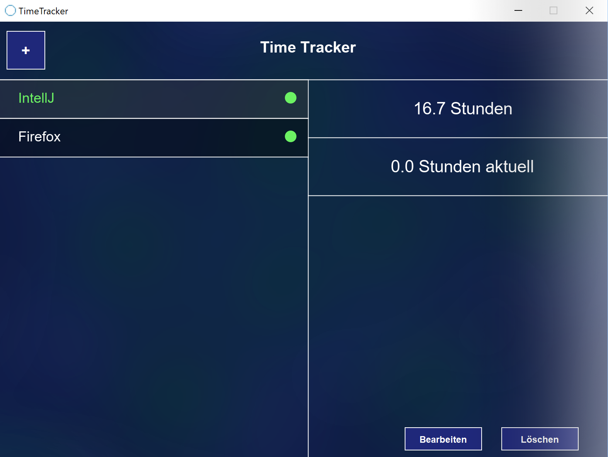
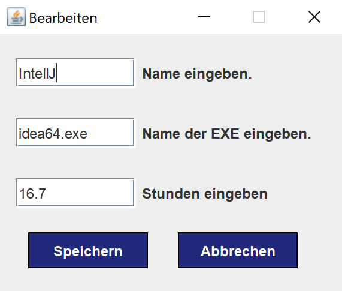
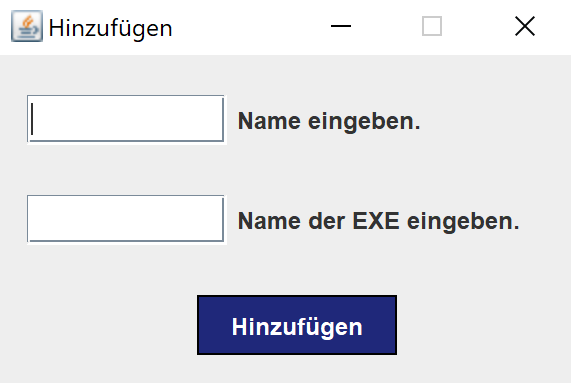

TimeTracker
Mit diesem Programm lässt sich die verbrachte Zeit in jeder beliebigen Anwendung erfassen.
Alle Programme. Egal welche Art.
Alle Programme werden aktzepiert, solange sie unter Windows als laufende Programme markiert sind.

Einfaches Bearbeiten. Du hast die Kontrolle.
Wer soll dir vorschreiben, wie viele Stunden du bereits in einem Programm verbracht hast? Du kannst deine bereits verbrachten Stunden einfach unter "Bearbeiten" eingeben.

Simples Hinzufügen.Ohne großes Drumherum.
Einfach den Namen des Programms (der angezeigt werden soll) eingeben, den Namen der .exe und schon wird das Aufzeichnen begonnen.
